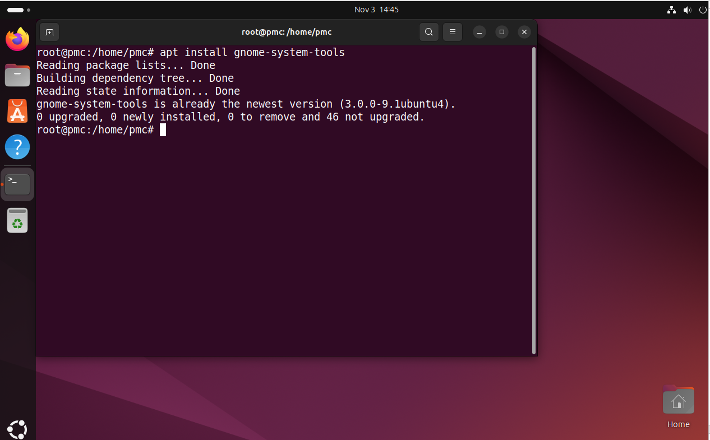
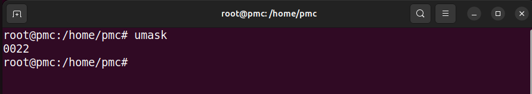
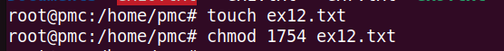
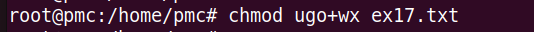
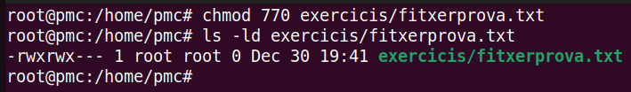
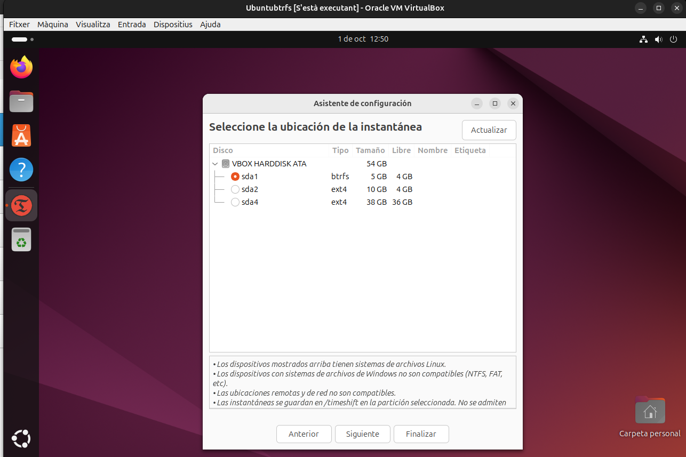
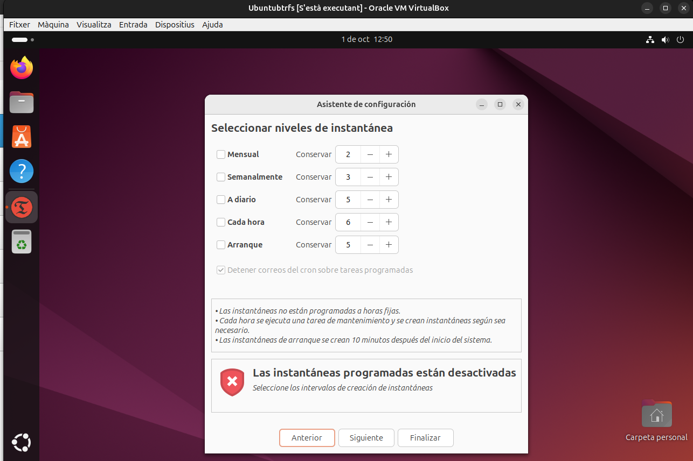
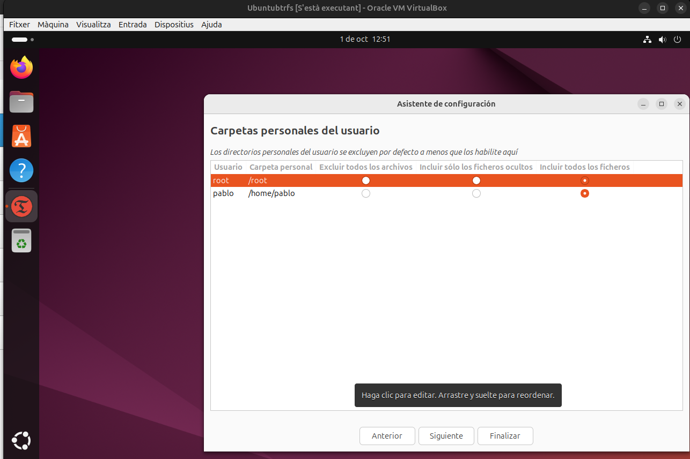
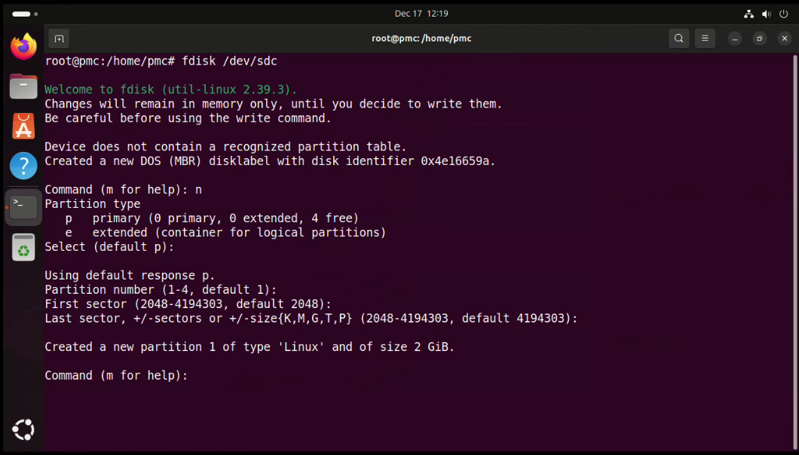
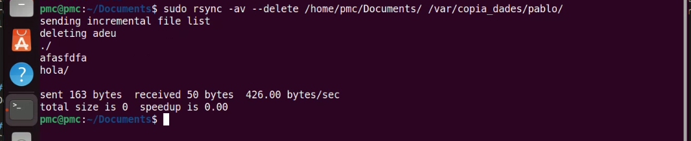

Sprint2
1. Gestió de processos
Alhora d'identificar procesos podem utilitzar la comanda pstree. Però, per no tindre incompatibilitats utilitzarem la comanda sudo su per estar en superadmin.
Ara si utilitzem pstree -h "usuari" podrem veure els procesos executats per l'usuari indicat (en el meu cas, pmc)
A més a més, utilitzant la comanda pstree -h -p "usuari" podem a més veure els procesos de l'usuari amb el ID de cada proces.
1.1 Matar processos
Amb la comanda top a la terminal, se'ns obrirà un administrador de tasques a temps real de tots els processos que tenim funcionant al nostre sistema i les seves especificacions. Per identificar a un process ens hem de fixar en el seu PID.
Si nosaltres volem acabar amb un proces solament hem d'utilitzar la comanda:
1.2 Definicions
Què és un usuari? Podem treballar amb més d'un usuari simultàniament? Un usuari és una entitat creada per poder gestionar un sistema opertiu, executar comandes, gestionar directoris, etc.
Què és un grup i quina utilitat té agrupar usuaris en grups? Un grup és una agrupació d'usuaris el qual serveix per aplicar permisos i restricción molts usuaris al mateix temps.
2. Gestió d'usuaris i grups i permisos
2.1 Crear nous usuaris


2.1.2 Versió gràfica


2.2 Permisos
-
/etc/passwdAquest fitxer conté informació sobre els usuaris del sistema. Cada línia representa un usuari i conté diversos camps separats per dos punts (:) amb informació bàsica. -
/etc/groupAquest fitxer emmagatzema la informació sobre els grups del sistema. Cada línia representa un grup amb camps separats per dos punts (:). -
/etc/shadowAquest fitxer conté les contrasenyes xifrades dels usuaris, així com altres paràmetres relacionats amb l'expiració de la contrasenya. Només pot ser llegit per l'administrador del sistema per qüestions de seguretat. -
/etc/gshadowAquest fitxer emmagatzema les contrasenyes dels grups i altres configuracions d'accés als grups. Només pot ser llegit per l'administrador.
En el fitxer /etc/shadow, el segon camp pot contenir símbols especials que indiquen l'estat de la contrasenya de l'usuari:
El * indica que el compte està bloquejat. Quan el sistema troba un * en aquest camp, es considera que no es pot iniciar sessió amb aquest compte.
El ! també indica que el compte està bloquejat, però en aquest cas la contrasenya encara és present però està desactivada. Això es fa per impedir l'accés sense eliminar la contrasenya completament.
En el fitxer /etc/shadow, el tercer camp, que correspon a la data de l'últim canvi de contrasenya, s'anomena "epoch". Aquesta data es calcula com el nombre de dies transcorreguts des de l'1 de gener de 1970, una data base coneguda com Unix Epoch.
2.1.3 Comprovació:
2.3 Crear grups
Creem 2 grups (alumnes i profes) amb la comanda addgroup.

Esborrem el grup de profes.
Creem el grup jocs

Afegim un usuari a un grup.
2.3.1 Modificació grups
Modifiquem el nom del grup a "Jocs" a "alumnesASIX".
Modifiquem la paraula de pas d'alumne1.
Modifiquem el nom d'alumne4 per alumne2.

Afegim dintre del grup alumnesASIX als 3 alumnes.
 Treiem a l'alumne2 del grup.
O, també es podria utilitzar:
Treiem a l'alumne2 del grup.
O, també es podria utilitzar:
Afegim a l'alumne1 al grup de jocs, però com a administrador i alumne2 com a usuari normal.
Fem que l'alumne1 tingui com a grup principal el grup d'alumneASIX.
- Quina és la diferència entre el que apareix al fitxer /etc/group i el que apareix al fitxer /etc/gshadow?
/etc/group: Emmagatzema informació bàsica sobre els grups, el nom del grup, l’identificador de grup (GID) i els membres associats.
/etc/gshadow: Emmagatzema la informació confidencial del grup, la contrasenya encriptada del grup i els usuaris que tenen permisos per administrar-lo.
2.4 Bloqueig
Bloquejem un usuari i comprovem que no pots accedir amb ell.

Ara, desbloquejem i comprovem que ja pots tornar a accedir amb ell.

- Per a què pot servir bloquejar un usuari? Podem voldre a bloquejar els usuaris per ocultar-los o impedir l'utilització d'aquests per raons de seguretat.
2.5 Caducitat de les paraules de pas
- M (Maximum days): Defineix el nombre màxim de dies abans que la contrasenya caduqui i l’usuari estigui obligat a canviar-la.
- m (Minimum days): Defineix el nombre mínim de dies abans que un usuari pugui canviar la seva contrasenya després d’haver-la canviat.
- W (Warning days): Defineix el nombre de dies d'avís abans de la caducitat, en què el sistema notificarà a l'usuari que ha de canviar la contrasenya.
- E (Expire date): Permet especificar una data exacta per a la caducitat del compte de l'usuari. Per exemple, -E 2024-12-31 caducaria l'usuari el 31 de desembre de 202
- M 30: Estableix la caducitat de la contrasenya a 30 dies. Això vol dir que l’usuari haurà de canviar la seva contrasenya cada 30 dies.
- m 7: Estableix el mínim de dies abans que l’usuari pugui canviar la seva contrasenya de nou, que en aquest cas és 7 dies.
- W 5: Estableix que l’usuari rebrà un avís 5 dies abans que caduqui la seva contrasenya.
Primer, amb la comanda adduser provachage creem el usuari de proves que utilitzarem.

Desprès amb la següent comanda:
Apliquem la configuració al usuariFinalment, amb chage -l provachage verifiquem la configuarció.
2.6 Editar valors de nous usuaris
UID_MIN
UID_MAX
Dintre d'aquest arxiu podem configurar els paràmetres quan es crea un nou usuari. D'aquesta manera tots el usuaris que creem tindran aplicats els paràmetres que nosaltres hem marcat. Llavors farem una prova modificant els següents paràmetres:SHELL=/bin/bash
HOME=/var
SKEL=/etc/skel

2.6.1 Comprovació:


2.6.2 Afegir usuaris al sudo
La comanda següent serveix per afegir un usuari al group sudo.

D'altra banda, aquesta comanda serveix per treure al alumne1 del group sudo.

2.6.3 Borrar usuaris
Al moment de voldre eliminar un usuari del sistema tenim dues maneres. La primera és amb la següent comanda per borrar l'usuari SENSE LA SEVA /HOME
Pe'l contrari, amb la següent comanda borrem l'usuari i la seva /home al mateix temps
2.6.4 Enllaçar

2.6.5 Editar ruta terminal per defecte
Editem la fila PWD='var' perquè quan s'obrigue una nova terminal, la ruta per defecte serà /var.
Dintre de l'arxiu agregarem la comanada rm -r /home/$USER/Baixades/* per a que quan accedim a un usuari nou, borri directament els arxius de la seva carpeta /Baixades


2.7 Permisos "normals" UOG
Llenguatge octal per calcular permissos
(-) significa que és un fitxer
(d) significa que és un directori/carpeta
(r) read
(w) write
(x) execute
Podem veure amb la comanda ls -l el llistat d'arxiu/directoris de la carpeta actual amb els seus permisos i més informació.
Amb la comanda chgrp -R group /carpeta podem donar els permisos normals a un grup específic per a la carpeta.

2.8 UMASK
UMASK (User Mask) és una configuració en Ubuntu i altres sistemes basats en Linux que controla quins permisos tindran per defecte els fitxers i directoris nous que creïs. Podríem dir que actua com un filtre que elimina determinats permisos del que es permet per defecte, ajudant a mantenir la seguretat del sistema.
Quan crees un fitxer o un directori, el sistema aplica uns permisos base predeterminats. Aquests són:
- Fitxers normals: Tenen permisos base de 666 (lectura i escriptura per a tothom, però sense execució).
- Directoris: Tenen permisos base de 777 (lectura, escriptura i execució per a tothom).
A continuació, la UMASK es resta d'aquests permisos base. Així, es defineixen els permisos finals del fitxer o directori nou.
Pots veure la configuració actual de UMASK simplement escrivint: umask

Per canviar-la temporalment a un valor com 077, que bloquejaria tots els permisos per als altres:
Els fitxers creats després d'aquest canvi només tindran permisos per a tu.2.9 Permisos especials

Sabem que amb la comanda chmod ... podem modificar els permisos sobre les posicions dels núemeros en octal.
- Primera posició: l'usuari propietari.
- Segona posició: grups.
- Tercera posició: altres.
Ara, podem agregar aquests permisos a carpetes compartides amb les comandes següent:
Per a aplicar aquest permisos a un arxiu en una carpeta compartida ho podem fer amb:

Desprès, amb:
Situa't al teu directori personal (/home/usuari). Crea utilitzant el teu usuari estàndard (no root) un fitxer buit anomenat ex1.txt.
Qui és el usuari propietari del fitxer? Com pots veure aquesta informació? L'usuari propietari del fitxer és el propi usuari pmc. Aquesta informació la pots veure amb la comanda ls -l.
Qui és el grup propietari del fitxer? Com pots veure aquesta informació? També el grup propietari de l'arxiu ex1 creat és el mateix usuari pmc. Aquesta informació la pots veure amb la comanda ls -l.
Situa't al teu directori personal (/home/usuari). Crea utilitzant amb l'usuari root (executant amb sudo) un fitxer buit anomenat ex2.txt.
Qui és el usuari propietari del fitxer? L'usuari propietari del fitxer és l'usuari root. Aquesta informació la pots veure amb la comanda ls -l.
Qui és el grup propietari del fitxer? L'usuari propietari del fitxer és l'usuari root. Aquesta informació la pots veure amb la comanda ls -l.
Utilitzant notació octal (000, 010, …), crea un fitxer ex7.txt al teu directori personal i assigna-li amb una sola execució els següents permisos:
Permís de lectura i escriptura per a l'usuari.
Permís de només lectura per al grup.
Cap permís per a altres.

Verifiquem el permisos de l'arxiu.
Utilitzant notació octal (000, 010, …), crea un fitxer ex8.txt al teu directori personal i assigna-li amb una sola execució els següents permisos:
Permís de lectura, escriptura i execució per a l'usuari.
Permís d'escriptura per al grup.
Permís d'execució per a altres.
Verifiquem el permisos de l'arxiu.
Utilitzant notació octal (000, 010, …), crea un fitxer ex9.txt al teu directori personal i assigna-li amb una sola execució els següents permisos:
Permís de lectura, escriptura i execució per a l'usuari.
Permís de lectura i escriptura per al grup.
Permís de només lectura per a altres.
Verifiquem el permisos de l'arxiu.
Utilitzant notació octal (000, 010, …), crea un fitxer ex10.txt al teu directori personal i assigna-li amb una sola execució els següents permisos:
Permís activat SUID.
Permís de lectura i execució per a l'usuari.
Permís de sols lectura per al grup.
Cap permís per a altres.
Verifiquem el permisos de l'arxiu.
Utilitzant notació octal (000, 010, …), crea un fitxer ex11.txt al teu directori personal i assigna-li amb una sola execució els següents permisos:
Permisos activats SUID i GUID.
Permís de lectura per a l'usuari.
Permís d'escriptura per al grup.
Permís de lectura per a altres.
Verifiquem el permisos de l'arxiu.
Utilitzant notació octal (000, 010, …), crea un fitxer ex12.txt al teu directori personal i assigna-li amb una sola execució els següents permisos:
Permís sticky bit activat.
Permís de lectura i execució per a l'usuari.
Cap permís per al grup.
Permís de lectura per a altres.
Verifiquem el permisos de l'arxiu.
Crea una carpeta pt13 al teu directori personal, i crea els fitxers ex13a.txt i ex13b.txt dintre de la carpeta pt13. Utilitzant notació octal (000, 010, …), estableix els següents permisos a la carpeta pt13, de forma que es propaguen automàticament a tots els fitxers, i demostra-ho:
Permís de lectura, escriptura i execució per a l'usuari.
Permís de lectura i escriptura per al grup.
Permís de lectura i escriptura per a altres.
Creem la carpeta i els fitxers:
Assignar permisos a la carpeta:
Verifiquem el permisos:
Utilitzant notació
Afegeix permís d'execució per a l'usuari
Afegeix permís d'escriptura i execució per al grup.
Creem el fitxer i modifiquem els permisos:
Verifiquem el permisos de l'arxiu:
Utilitzant notació
Afegeix permís d'escriptura per a tots els tipus d'usuari.
Creem el fitxer i modifiquem els permisos:
Verifiquem els permisos de l'arxiu:
Utilitzant notació
Elimina permís d'escriptura per a l'usuari.
Elimina permís de lectura per als altres.
Creem el fitxer i modifiquem els permisos:
Verifiquem els permisos de l'arxiu:
Utilitzant notació
Estableix els permisos d'escriptura i d'execució per a tots els tipus d'usuari.
Creem el fitxer i modifiquem els permisos:
Verifiquem els permisos de l'arxiu:
Crea com a administrador el fitxer pt22.txt (sudo) al teu directori personal i a continuació fes:
Que el teu usuari habitual es faci usuari propietari del fitxer.
Que el teu grup habitual es faci propietari del fitxer.
Creem el fitxer com a root:
Canviem el propietari:
Canviem el grup:
Verifiquem els canvis:
2.10 ACL (Access Control List)
getfacl proves/ MOSTRA INFORMACIÓ
setfacl -m user:prova3:--- proves/ AFEGIR RESTRICCIONS
setfacl -b proves/ BORRAR RESTRICCIONS
Amb el teu usuari local (pmc) crea la carpeta exercicis i dóna-li permisos 770 de forma recursiva.
Amb la comanda chmod -R podem donar permisos recursivament.
Amb ls -ld podem veure els permisos de la carpeta.
Ara, amb la comanda setfacl -R -m podem crear una nova llista ACL de manera que l’usuari vesper tingui tots els permisos.
I aqui està la comprovació. Amb la comanda getfacl exercicis/.
Dintre de la carpeta exercicis creem una altra que es digui repas
Si volem ara comprovar els permisos de les llistes ACL, podem utilitzar aquestes comandes per accedir amb l'usuari vespre, crear un fitxer dintre i sortir.
La comanda setfacl -R -b esborra els permisos ACL per a la carpeta exercicis quedant només els UGO.
I comprovem i verifiquem que ja no hi han ACL
Creem un grup anomenat pugs i afegim dintre l’usuari vesper
Creem un altre usuari anomenat perrete

Amb el teu usuari local (pmc) creo un arxiu de text amb permisos 770.

Finalment, creo una ACL per a aquest arxiu de forma que els usuaris del grup pugs puguin llegir-lo i modificar-lo i la resta d’usuaris res. Comprovem amb els dos usuaris que tenim, vesper i perrete
Amb aquesta comanda dono permisos d'escriptura i lectura al grup.
D'altra banda, amb aquesta denego l'accés a la resta d'usuaris.
Finalment, comprovem l'accés dels dos usuaris vesper i perrete.
3. Sistemes de fitxers i particions
3.1 Teoria:
Estructura de la informació
-
Mida sector
-
Mida block
-
Fragmentació interna: Espai desaprofitat dels blocks o clusters //solució: fer els bloc més petits
-
Fragmentación externa: Arixus guardats en molt arxius a la vegada, aixo fa que la velocitat de lectura i escriptura es reduixque.
3.2 Tipus de formateig
3.3 Sistemes de fitxers:
Un sector es la unitat mínima física en la que es guarden les dades (unitat per defecte =512) (sector)
El sistema operatiu funciona = Mida del blocs (cluster) és la unitat mínima 4.096 bytes // podem canviar la mida dels blocs, però no dels sectors.
du -b arxiuveure la mida dels arxius.du -sh arxiuveure la mida real dels arxius.df -T e4defracg -c /dev/sda2comprobar si fa falta defragmentar el disc.
Format d'alt nivell: no borra els fitxers, borra els sistema d'arxius (no els borrar pero els oculta per a tu), ignora sectors.
Format normal: no borra els fitxers, borra els sistema d'arxius. Pero, si hi han sectors defectuosos no els guarda.
Format baix nivell: borra fitxers, borra sistemes d'arxiu i no comprova res. BORRA TOT, COM SI FOS UN DE FÀBRICA.
La comanda fdisk -l servei per mirar el llistat de partiions muntados i no muntas que tenim al sistema.

A continuació, si volem muntar una nova partició ens hem d'adentra al menú de creació de particions. Això ho aconseguim amb la següent comanda (en el meu cas, la ruta del disc es /dev/sda):
Al moment de ja estar en el menú, per començar a configurar amb la lletra n creem una nova partició. utilitzem el elements per defecte menys el tamany del segon sector, fiquem la meitat.
Finalment, per aplicar el canvis realitzats hem d'utilitzar la lletra w.
3.3.1 MUNTATGE PROVISIONAL
Creem una carpeta qualsevol i muntem la nostra partició provisional que els canvis es desfaran al moment de reiniciar la màquina completament.

Els archius no desapareixen si fas umount
3.3.2 MUNTATGE PERMANENT
Ara, per fer el muntatge permanentment haurem d'editar l'arxiu /etc/fstab. Dintre d'aquest document s'haurà d'editar la línia de la ruta del muntatge. Ho aconseguiran fent-ho d'aquesta manera.
3.4 SISTEMES DE FITXERS
ext4: L'ext4 és un sistema de fitxers utilitzat en Linux que serveix per organitzar i emmagatzemar dades al disc de manera eficient i segura. És ràpid, fiable i capaç de gestionar fitxers molt grans i discs moderns.
4. Còpies de seguretat i automatització de tasques
4.1 Conceptes bàsics
S'ha d'establir una bona política de còpia de seguretat
Completa: És una còpia de seguretat la qual guarda totes les dades d'una vegada de tot el disc. És més fàcil de recuperar les dades, ja que per a restaurar les dades es necessita l'última completa. Finalment, la còpia més lenta, perquè ha de copiar tota la informació del disc dur.
Diferencial: Solament guarda les diferències que hi ha des dee l'última còpia completa. Aquesta és més ràpida de fer a comparació de la completa perquè ha de guardar molts menys arxius i dades (tot depenent de tots els canvis que has pogut fer en un dia, però sempre serà menys que la completa). Per recuperar les dades necessites l'última còpia completa i diferencial abans de l'error al sistema.
Incremental: És la còpia que guarda la informació de la seva anterior còpia. És molt més ràpida perquè guarda menys dades que les altres i per recuperar les dades es necessita tot el recorregut de còpies des de l'última completa fins a les anteriors a l'última incremental que has fet abans de l'error del sistema.
4.2 Programes en interfície
4.2.1 Deja Dup
Deja Dup és una interfície gràfica d'usuari (GUI) que simplifica les còpies de seguretat mitjançant Duplicity com a motor. És molt fàcil d'utilitzar, ja que està dissenyat per a usuaris que busquen una solució senzilla i fiable. Característiques principals:
- Interfície intuïtiva: Pots configurar còpies de seguretat en només uns pocs passos.
- Xifratge: Les dades es poden xifrar per protegir-les de l'accés no autoritzat.
- Còpies incrementals: Només copia els canvis des de l'última còpia de seguretat, estalviant espai i temps.
- Integració amb serveis al núvol: Suporta serveis com Google Drive i altres llocs remots via FTP, SFTP, WebDAV, etc.
- Planificació automàtica: Pots programar còpies de seguretat regulars.
Per utilitzar-lo seguim els següents pasos:
- L'instal·lem (si no el tenim ja):
- L'obrim des del menú d’aplicacions.
- Seleccionem què volem incloure a la còpia de seguretat i on desar-la (pot ser un disc local, extern o al núvol).
- Configurem la freqüència i si volem activar el xifratge.
4.2.2 Duplicity
Duplicity és una eina de línia de comandes que està darrere de Deja Dup. És ideal per a usuaris avançats que volen més control sobre les seves còpies de seguretat. Característiques principals:
- Suport per a llocs remots: Funciona amb serveis al núvol i servidors remots.
- Còpies de seguretat xifrades: Utilitza GPG per protegir les dades.
- Còpies incrementals i compressió: Guarda només els canvis des de l'última còpia, utilitzant espai mínim.
- Altament configurable: Pots ajustar cada detall del procés de còpia.
Creem una còpia de seguretat amb la següent comanda:
Restaurem la còpia de seguretat amb la següent comanda:
4.2.3 Timeshift
Timeshift és una eina especialment dissenyada per fer còpies de seguretat del sistema, similar als punts de restauració de Windows. És perfecte per restaurar el sistema en cas d'errors greus. Característiques principals:
- Snapshots (instantànies): Guarda l’estat complet del sistema.
- Suport per a Btrfs i Rsync: Pot utilitzar diferents sistemes de còpia de seguretat.
- Automatització: Pots programar instantànies automàtiques.
- Fàcil d’utilitzar: La seva interfície és molt senzilla i s’integra bé en sistemes com Ubuntu i Linux Mint.






4.3 Comandes
CP: és un còpia simple no intel·ligent que no mira res i ho còpia tot en local.
Creació partició /dev/sdc.

Creació partició /dev/sdd.
4.4 CP
Per provar la funcionalitat de la comanda cp, crearem un fitxer i una carpeta de prova.
Amb la comanda sudo cp -R /rutadelsarxiusquevolscopiar /rutadeonvolscopiarelsarxius podràs copiar els arxius d'un dierctori específic a una altre.
rsync: és un còpia intel·ligent que només copia els modificat i es pot fer entre màquines remotres per via SSH.
Creem uns nous arxius i eliminem els altres per fer una prova diferent.
4.5 RSYNC
El que farà aquesta comanda és borrar els arxius que hi haguín dintre del directori destí i després copiarà els nous fitxers del directori origen.

DD: no és propiament per fer còpies d'arxius, treball en local i treballa a nivel de bloc. Serveix molt bé per fer clonacions de disc o particions. Copia tot el sistema d'arxius. Es pot utilitzar per esborrar definitivament les dades dels arixus d'un disc/partició.
Si les dues ids de les particions són la mateixa, significa que el procediment que hem fet ha sigut correcte.4.6 Automatització
4.6.1 Teoría
Diferencies entre Cron, Anacron
En SO anteriors funcionaven per separat pero ara funcionen conjuntament, serveix per automatitzar tasques.
Anarcron: Quan un oridinador pugui estar apagat perquè quan s'encen detecta la tasca que no s'ha exectuat perquè estava apagat i l'executa. Quan siguen una automatització de tasques siguen més a nivell general en el sistema operatiu
Cron: S'utilitza més quan volem exectuar alguna cosa concretament a una hora determinada perquè pensem que l'ordinador estarà encès.
-
Opcions del Cron:
-
Utilitzarem l'arxiu /etc/chromtab quan volem exectura alguna cosa globalment per a tots el usuaris.
- Quan volem definir alguna cosa especifica per a un o més usuaris utilitzem la comanda:
crontab -e -u usuari.
4.6.2 Pràctica
Chron
Per configurar la compia de segureta amb cron, primer hem de crear un script amb amb la ruta i data a la que volem fer la còpia de seguretat.
Per fer aixo solament hem de crear un arxiu de text i afegir la línia d'ordres dintre del script i guardar-lo com .sh. Per exemple, copia.sh
#!/bin/bash
TIMESTAMP=$(date + "%Y%m%d_%H%M%S")
tar -cvf "/home/$(whoami)/Desktop/copiaseguretat_$TIMESTAMP.tar.gz" "/home/$(whoami)/Documents"
Al finalitzar, amb Ctrl+O guardem i Ctrl+X per sortir de l'arxiu.
Donem permissos d'execució a l'arxiu amb la comanda.
Finalment, executem l'arxiu.
Anacron
A continuació, per configurar Anacron, ens hem de dirigir a l'arxiu /etc/crontab i al final de les línies de codi configurem al nostra copia de seguretat.
Els primers dos dígits de la lína són per indicar els minuts i els altes dos per indicar l'hora de la copia. D'altra banda, els altres 3 digits són per indicar dia del mes, mes i dia de la setmana.
Si copiem el script de la còpia de seguretat a la carpeta de de configuració de la còpia de seguretat diaria (cron.daily/), s'executara la còpia automàticament sense tindre que executa el script a mà i tenint la màquina on.
Com podem veure, la copia s'ha creat.

Dintre de l'arxiu `/var/spool/anacron/cron.daily i fiquem una data específica, al reiniciar la màquina tindre la còpia de seguretat feta dintre del directori.